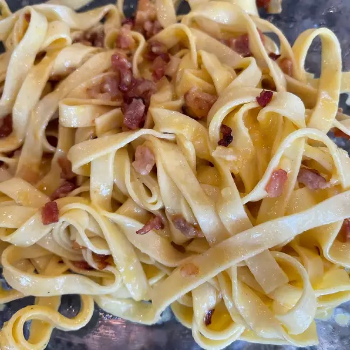

Fettucine Carbonara

Rich and creamy carbonara that everyone will love!
This carbonara is made up of a creamy sauce that takes less than 15 minutes to make.
Ingredients
- 1 ½ tablespoons and ½ teaspoon olive oil
- 4 shallots, diced
- 1 pound bacon, cut into strips
- 1 large onion, cut into thin strips
- 1 clove garlic, chopped
- 1 (16 ounce) package dry fettuccine pasta
- ¾ cup shredded Parmesan cheese
- ½ cup heavy cream
- 3 egg yolks
- salt and pepper to taste
Steps
- Heat olive oil in a large heavy saucepan over medium heat. Sauté shallots until softened. Stir in bacon and onion; cook and stir until bacon is evenly browned. Stir in garlic when bacon is about half done. Remove from heat.
- Bring a large pot of lightly salted water to a boil. Add pasta and cook for 8 to 10 minutes or until al dente. Drain pasta, then return it to the pot.
- Whisk Parmesan, cream, and egg yolks together in a medium bowl. Pour bacon mixture over pasta; stir in cream mixture. Season with salt and pepper.
Back to main page